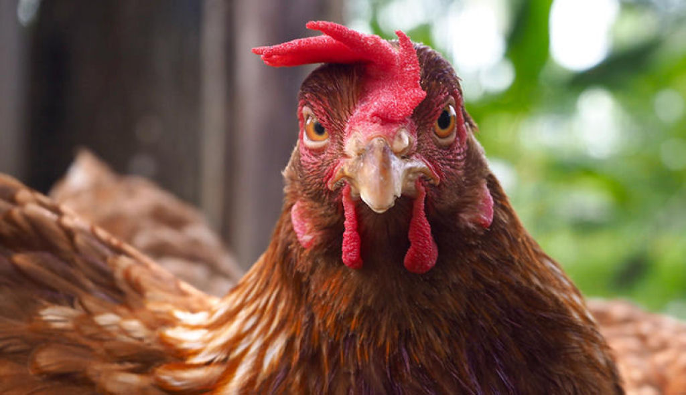
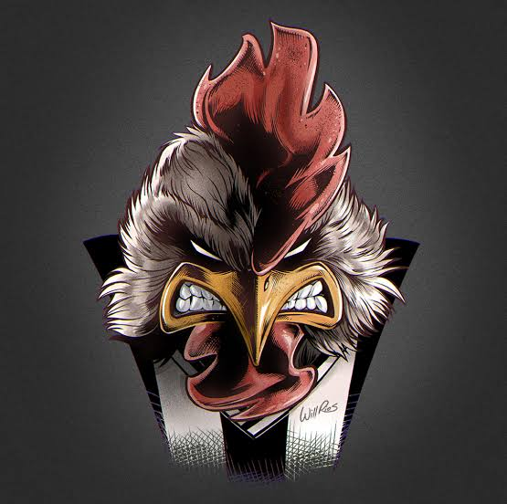
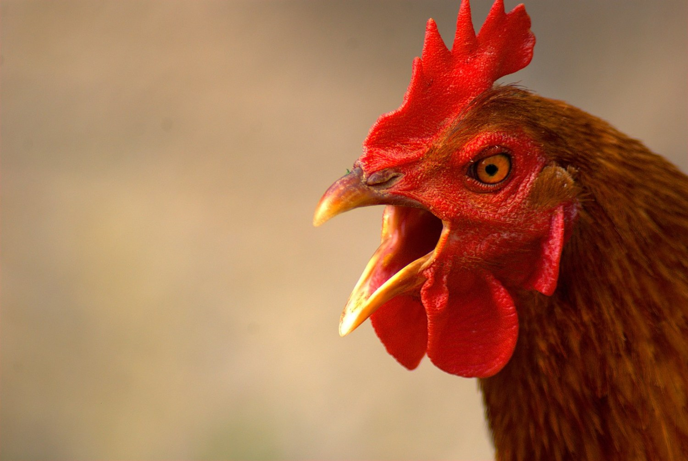
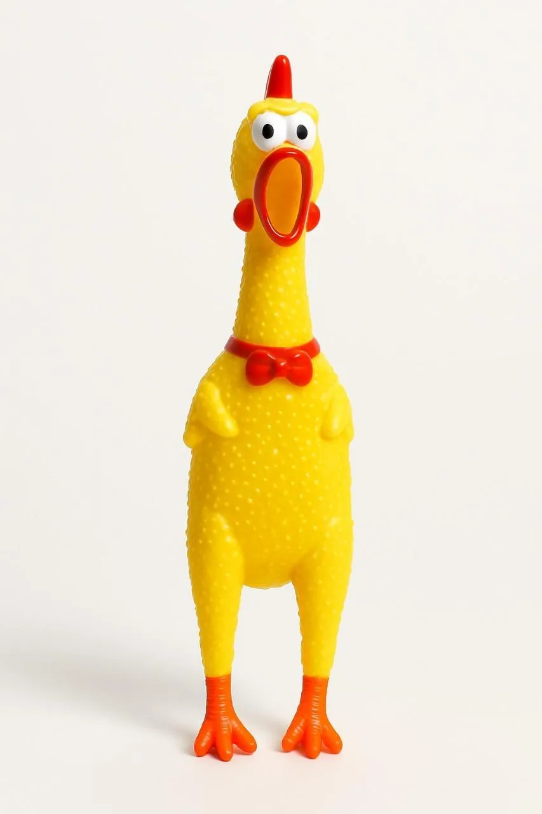
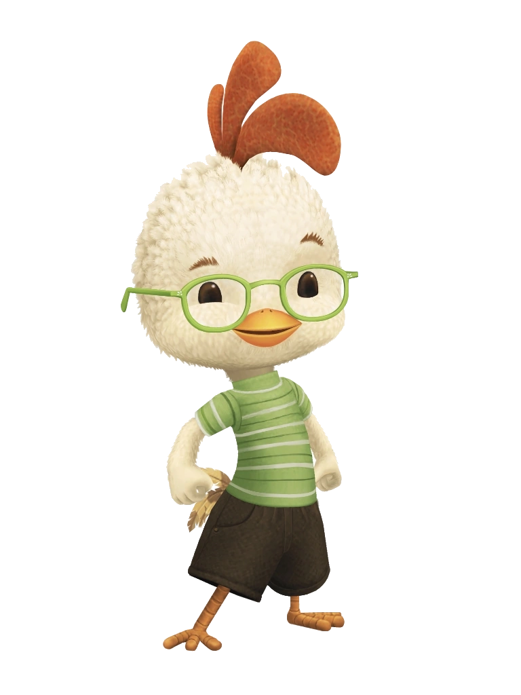
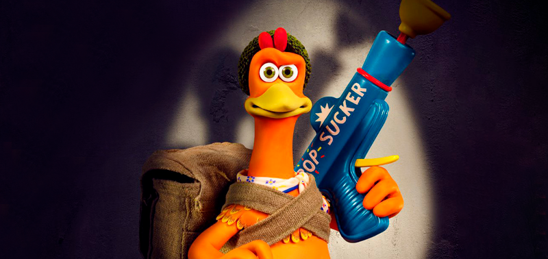
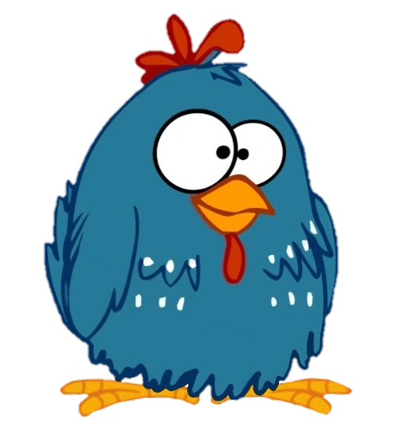
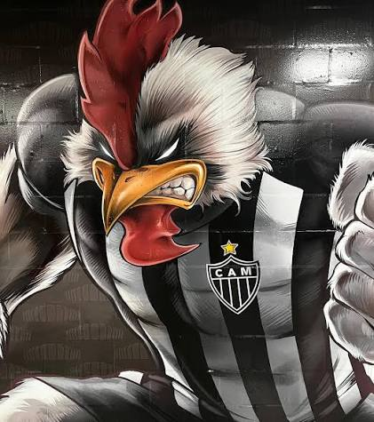
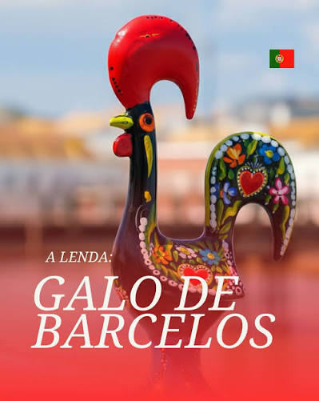

Escolha o seu campeão e prepare-se para a batalha!
Conheça os desafiantes e descubra quem será o grande vencedor da Rinha de Galo 2026.
Selecione o seu campeão e faça suas apostas!
Escolha o seu galo para a rinha com base nos atributos PESO, AGILIDADE, RESISTÊNCIA e BICADA.
O galo com maior pontuação em cada atributo terá mais chances de vencer a batalha.
Faça suas apostas e torça pelo seu campeão, nos valores de R$ 100, R$ 500 e R$ 1.000.
OBSERVAÇÃO: O galo com maior pontuação em cada atributo terá mais chances de vencer a batalha, mas a vitória não é garantida.
A sorte também desempenha um papel importante no resultado final.
Selecione o seu campeão e faça suas apostas!

A galinha de borracha é conhecida por sua resistência, mas possui pouco peso. Ela pode aguentar ataques, mas não é a mais forte.ATRIBUTOS:

Chicken Little é conhecido por sua agilidade e resistência. Ele pode se mover rapidamente e resistir a ataques, mas não é o mais pesado.ATRIBUTOS:

A galinha da fuga é a mais equilibrada. Ela pode aguentar ataques e se mover com alguma agilidade, mas não é a mais forte nem a mais rápida.ATRIBUTOS:


